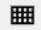
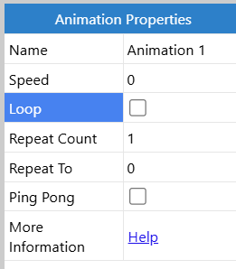
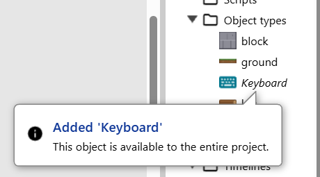
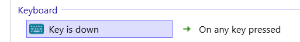
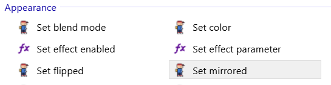

Face the Way You Run: Mirroring in Construct 3
Swap the alien in your platformer for the side-view runner from Piskel, then add two events so it turns to face left or right as it runs. About half a class.
What you will build
The same platformer with the same ground, log and block, but the player is now your side-view runner. Press ← and it turns to face left; press → and it turns back to face right.

- Learning objective: We are learning to make a character face the way it moves.
- Prior knowledge: Construct 3 Lesson 1: Jump and Fall with Outside Assets (your saved project), and your sprite sheet from Piskel Lesson 2: Side-View Runner
Success criteria
- I can open my saved Construct 3 project.
- I can swap a sprite's frames for a new sprite sheet.
- I can use Keyboard events to mirror the player so it faces the way it runs.
- I can save my game as a new file and hand it in.
Key vocabulary
| Word | Meaning |
|---|---|
| Keyboard object | Lets events check which keys are pressed. It isn't a picture, so it never shows on the layout. |
| Key is down | A condition that is true the whole time a key is held. |
| Set mirrored | An action that flips a sprite left to right (Mirrored) or back to normal (Not mirrored). |
| File you need | From |
|---|---|
| Your Outside Assets project (cloud save or the .c3p file you downloaded) | Construct 3 Lesson 1 |
| Your runner sprite sheet PNG (2 frames in one row, 64 × 32) | Piskel Lesson 2 |
Missing the runner? Download the example: runner.png

- The game ends up with 3 events, so it still fits in the free version of Construct 3.
- Time: about half a class period.
- Click a part to open it. Opening one part closes the others. Tick every checkpoint box before you move on; your ticks are remembered on this computer.
Lesson brief
If you already know Construct 3, follow the chart and you can finish from it alone. Click any box to jump to its full steps; the Back to the brief button brings you back here.
Part 1 · Open your platformer
Your Outside Assets project
Part 2 · Swap in the runner
runner PNG · Columns 2 · Rows 1 · 32 × 32
Add all frames · Import frames
Animation 1: Speed 0 · Loop off
Part 3 · Face the way you run
Right is down → Set mirrored: Not mirrored
Part 4 · Save as a new game
New name · Download a copy → Google Classroom
Extra · Finished early? (optional)
Left: frame 1 · Right: frame 0
Each colour is one part. Codes like 2B mean Part 2, section B. Underlined words are links.
Part 1 · Open your platformer
You don't start from scratch. You open the platformer you built in the Outside Assets lesson.
- Go to editor.construct.net. If you used a cloud save, log in first.
- Choose Menu → Project → Open, then pick where your project is: your cloud save, or the .c3p file you downloaded (check your Downloads folder).
- Your platformer opens on the Layout 1 tab (middle of the screen), with the alien, the ground, the log and the block.
Part 2 · Swap in the runner
The player keeps its name, its size, its Platform behaviour and its event. Only its pictures change: the five alien poses come out and the two runner frames go in.
2A · Import the runner
| Import Frames → From Sheet | Value |
|---|---|
| File | Your runner sprite sheet PNG |
| Columns | 2 (type it) |
| Rows | 1 |
| Width | 32 |
| Height | 32 |
- On the Layout 1 tab, double-click the alien. The Animations Editor opens, showing the five alien poses in the Animation 1 Frames panel (bottom middle).
- Right-click an empty white spot in that panel, after the last frame. Hold the mouse over Import Frames and click From Sheet. This is the same as in Outside Assets, step 2A.
- Pick your runner PNG and click Open. In the window that opens, type 2 in Columns and check Rows 1, Width 32, Height 32.
- Click Add all frames

(the grid button at the left end of the bar). Two frames appear along the bottom, numbered 0 and 1: facing right and facing left. - Click Import frames (bottom-right, beside Cancel). The panel now reads Animation 1 Frames (7): the five alien poses as frames 0 to 4, then the runner as frames 5 and 6.
2B · Remove the alien
| Animation Properties (Animation 1) | Value |
|---|---|
| Speed | 0 (it was 8 from Outside Assets Part 5) |
| Loop | Off (unticked) |
- Right-click frame 0 (the first alien pose) and choose Delete. The next alien pose slides into its place.
- Do it four more times, always on frame 0, until only the two runner frames are left. The panel reads Animation 1 Frames (2): frame 0 faces right, frame 1 faces left.
- In the Animations list (top-right of the editor), click Animation 1. In Animation Properties, set Speed to 0 and untick Loop, so the runner stays on frame 0 instead of flipping back and forth. It should look like this:

- Close the Animations Editor with the X in its top-right corner. The runner is on the layout where the alien was, at the same 64 × 64 size.
- Click Preview . The runner runs, jumps and lands, but it always faces right, even when it runs left.
Part 3 · Face the way you run
Two events flip the runner to face the direction it is running. Mirrored turns the picture left to right, so frame 0 (facing right) faces left.
3A · Keyboard object
- Go to the Layout 1 tab (middle of the screen) and double-click an empty part of the layout. The Create new object type window opens. Click Keyboard (it turns grey when picked), then click Insert.


3B · Events 2 and 3
| Event | Condition | Action |
|---|---|---|
| 2 | Keyboard → Key is down → Left arrow | Player → Set mirrored → Mirrored |
| 3 | Keyboard → Key is down → Right arrow | Player → Set mirrored → Not mirrored |
- On the event sheet, click Add event at the bottom of the sheet. The Add condition window opens; double-click Keyboard .
 Then double-click Key is down (not On any key pressed ).
Then double-click Key is down (not On any key pressed ).
Click the key box, press the Left arrow, and click Done. - Grey Add action → Player → Set mirrored (in the Appearance group, beside Set flipped) → Mirrored → Done.

Pick the right one: use Set mirrored, not Set flipped just to its left. Mirrored turns the sprite to face the other way; Flipped turns it upside down. The little pictures beside these actions are your own sprite, so they look different in every game. - Now make event 3 for the right arrow. Click Add event at the bottom of the sheet again. In the Add condition window, double-click Keyboard , then double-click Key is down. Click the key box, press the Right arrow, and click Done. A new event 3 appears under event 2.
- On event 3, click the grey Add action → Player → Set mirrored. The Parameters for Player: Set mirrored window opens. Change the State dropdown from Mirrored to Not mirrored, then click Done.

- Click Preview . Run left and the character turns to face left; run right and it turns back.
Part 4 · Save as a new game
Use Save as, not Save, so your Outside Assets game stays as it was and this becomes a new game.
Save your work
- Logged in: the first time, Menu → Project → Save as → Cloud save. After that, the Save button (just right of Menu) saves to the same place. (Shortcut: Ctrl+S)
- Guest: Menu → Project → Save as → Download a copy before you close the tab.
- To hand in: Menu → Project → Save as → Download a copy and upload the .c3p file to Google Classroom (classroom.google.com).
Extra · Finished early? Use your own left frame
Optional. Mirroring flips the right-facing picture. You also drew a left-facing frame in Piskel (frame 1). Here you use it instead.
| Event | Condition | Action (replaces Set mirrored) |
|---|---|---|
| 2 | Keyboard → Key is down → Left arrow | Player → Set frame → 1 |
| 3 | Keyboard → Key is down → Right arrow | Player → Set frame → 0 |
- On event 2, click the Set mirrored action and press Delete. Click the grey Add action → Player → Set frame (in the Animations group). Type 1 and click Done.
- On event 3, delete Set mirrored the same way. Click the grey Add action → Player → Set frame. Type 0 and click Done.
- Click Preview . The runner turns the same way, but now it shows the frame you drew.
Troubleshooting
| Problem | Fix |
|---|---|
| Keyboard is already under Object types before 3A (for example, from an earlier extra part) | A project only needs one Keyboard. Skip 3A and go to 3B. Or right-click Keyboard in the Project Bar, choose Delete (any events that use it go too), then do 3A and 3B again. |
| No Keyboard in the Add condition window | Keyboard isn't in the project yet. Do 3A first. |
| The runner keeps flipping back and forth by itself | Animation 1 is still playing. Set Speed to 0 and untick Loop (2B). |
| You see two runners side by side in one frame | The sheet came in with From Files. Delete that frame and use Import Frames → From Sheet with Columns 2 (2A). |
| The runner faces the wrong way when it runs | The two events are swapped. Left arrow gets Mirrored; Right arrow gets Not mirrored (3B). |